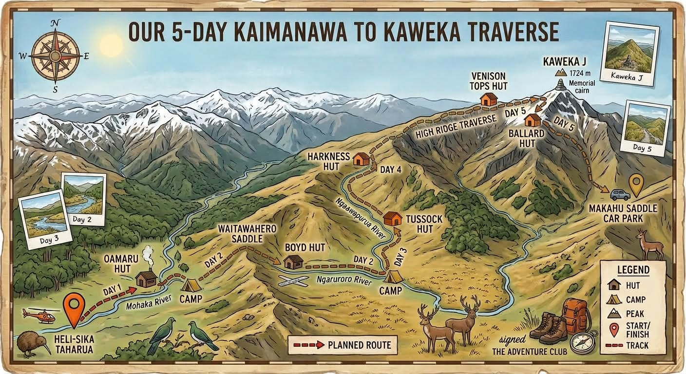

Map
Tracks are routed along OpenStreetMap paths, so treat them as a guide and navigate by the poles, markers and a paper map. No phone coverage on the track: download the GPX or an offline map before leaving.
Download GPX (all 5 days)Schedule
Fri 11 Dec · optional early start
- The Wellington crew can drive up the night before and sleep in Napier or Hastings. That turns Saturday into a relaxed 1 h 15 drive (69 km) from Napier to Makahu Saddle instead of a 3:30 am start. to decide
Day by day
Times are estimates for a group with full packs and kids: about 3.5 km/h on the flat plus an hour per 500 m of climb, checked against DOC track times where DOC gives them. Add breaks.
Transport
| Leg | Who | Distance | Driving time |
|---|---|---|---|
| Car 1: Seatoun → Makahu Saddle Sat 12 Dec, early | Tom K, Henry, Jonathan, Gils | 375 km | about 5 h 20 without stops; allow 6 h |
| Car 2: Wellington → Palmerston North → Makahu Saddle | Tom N, Kahu, Tane; Leo joins in Palmy | 379 km | about 5 h 30 without stops; allow 6 h |
| Merv's van: Makahu Saddle → Taharua road end (Poronui) Sat 12 Dec, leaves 10:00 | All 8, with packs | 169 km | about 3 h 15, via Napier and the Napier–Taupō road; at the road end by about 13:15 |
| Home: Makahu Saddle → Palmerston North → Wellington Wed 16 Dec, afternoon | Both cars, plus Kate | 375 km | about 5 h 30 without stops; home around 20:30 to 21:30 |
Driving times are from OSRM road routing with no traffic or stops; the last stretch to Makahu Saddle is slow, winding back-country road.
Shuttle options to decide
- Merv, big van, $137 per person (about $1,096 for 8). Tom N is ready to book; pickup 10:00 on Sat 12 Dec at Makahu Saddle.
- Jonathan's option: 11-seater rental for $180, still needs a driver (a friend in Hastings) to take us from Makahu Saddle to Poronui. Jonathan has also asked Mates Travel (Hawke's Bay) for an all-in quote.
To sort
- urgent Choose the shuttle (Merv or the rental) and let Merv know.
- open Confirm the 10:00 pickup at Makahu Saddle with the driver.
- open Hut passes: Tom N to buy for everyone, 2 nights. $15 per adult and $7.50 per youth (5 to 17) per night.
- open Wellington crew: drive up Friday night or leave at 3:30 am Saturday?
- open Tell Kate the expected finish: Makahu Saddle around 13:30 to 15:00 on Wed 16 Dec.
- open Check the forecast and river levels in the last few days (Mohaka, Oamaru, Ngaruroro crossings, and wind on the Kaweka tops).
- open Gear: tents, stoves and fuel for 4 nights, PLB, paper maps, gaiters for the Ngaawapurua scrub.
Safety & links
- No phone coverage for most of the trip. Carry a PLB, and leave the route and dates with someone at home.
- Poronui Station is private land: walkers only, no hunting, no mountain bikes; stay on the poled route.
- River crossings: Oamaru/Kaipō on day 1, side streams on day 2, the Ngaruroro after Boyd Hut on day 3 (usually below knee deep, floods quickly after rain), repeated Ngaawapurua crossings on day 3. If a river is up, wait; don't cross.
- Kaweka tops (days 4 and 5) are exposed above the bushline. Don't cross in strong wind or poor visibility; huts at Venison Tops, Mangaturutu and Ballard are nearby for shelter.
- Hunters use these huts; wear something bright.
DOC: Boyd, Oamaru and Cascade Hut tracks · DOC: Harkness Hut · DOC: Tussock Hut · Windy forecast for Kaweka J · MetService rural forecast, Hawke's Bay · MetVUW rain map
The dream map
The illustration that started it. It isn't to scale; the real route is on the map above.
